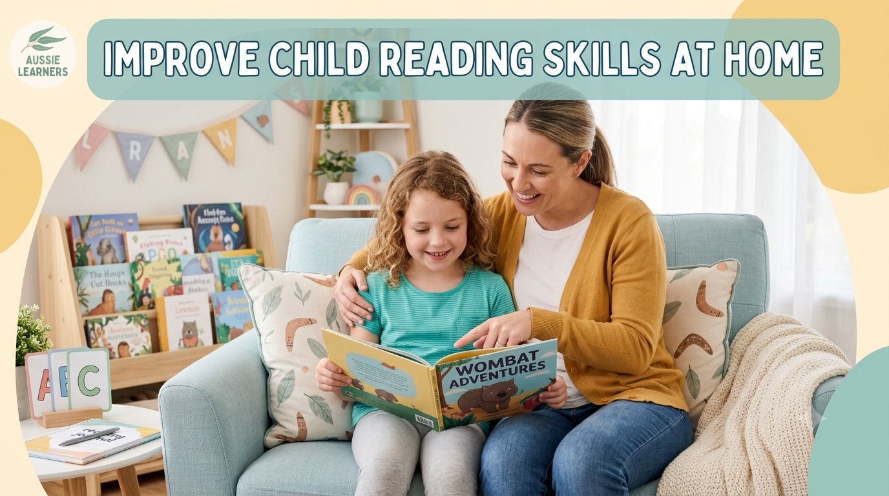

F–6 · Reading
How to Improve Your Child's Reading Skills at Home: A Guide for Australian Parents
Simple, practical ways to help your child become a confident, curious reader — no special resources required.

Every parent wants to see their child become a confident reader.
Reading is more than learning words on a page. It helps children understand ideas, build vocabulary, develop imagination and become confident learners at school.
The good news is that simple activities at home can make a big difference. Small daily reading habits, conversations and practice opportunities can help children strengthen their reading skills over time. Explore our free English worksheets for extra support.
Why Reading Skills Matter
Strong reading skills support almost every area of learning.
Children who develop strong reading skills often find it easier to understand instructions, learn new vocabulary, solve problems and communicate their ideas clearly.
Reading also develops important thinking skills such as predicting, questioning, summarising and making connections.
7 Simple Ways to Support Reading at Home
Everyday routines and conversations that build reading confidence.
1. Create a Daily Reading Routine
A regular reading routine helps children build confidence and fluency.
Try this: Set aside 10–20 minutes each day for reading. Choose a comfortable space and allow your child to read books that match their interests.
2. Talk About What Your Child Reads
Reading is not only about saying words correctly. Talking about books helps children develop deeper understanding.
- What do you think will happen next?
- Why did the character make that choice?
- What was the most interesting part?
- Can you explain this in your own words?
3. Build Vocabulary Every Day
Children become stronger readers when they understand more words.
Parents can build vocabulary by explaining new words, discussing interesting topics and encouraging children to describe ideas in detail.
4. Practise Phonics and Decoding Skills
For younger children, phonics provides an important foundation for reading success.
- Recognising letter sounds
- Blending sounds together
- Reading unfamiliar words
- Noticing spelling patterns
Helpful starting points include our free beginning sounds worksheet, CVC blending and segmenting, and decodable sentences.
5. Encourage Different Types of Reading
Children benefit from reading different types of texts, including:
- Story books
- Information books
- Science texts
- Magazines
- Recipes and instructions
6. Celebrate Progress
Every child develops reading skills at their own pace. Celebrate achievements such as learning new words, finishing books and explaining ideas clearly.
7. Use Printable Reading Activities
Printable activities can provide extra practice with important skills such as reading comprehension, vocabulary, phonics and responding to texts.
Try the Foundation reading comprehension worksheet, Year 3 main idea and key details, or Year 3 inference skills. You can also browse the full Aussie Primary Academy worksheets page.
Reading Support by Year Level
Foundation to Year 2: Early primary students usually focus on phonics, decoding words, reading fluency, vocabulary and basic comprehension. Useful resources include Foundation sight words and Year 1 reading practice.
Year 3 to Year 6: Older primary students develop deeper reading skills including making predictions, identifying themes, finding information, making inferences and summarising texts. See Year 3 cause and effect reading and Year 3 fiction comprehension.
Common Mistakes Parents Can Avoid
Making reading feel like a test: Children need encouragement and enjoyment. Try to keep reading conversations positive rather than making every activity feel like an assessment.
Correcting every mistake immediately: Give children time to self-correct. Gentle guidance and encouragement help build confidence.
Only reading school books: Children can become stronger readers when they explore topics they enjoy, including animals, science, sport and adventure stories.
Reading Myths Worth Letting Go Of
A few common beliefs that can unintentionally add pressure.
"Faster reading means better reading." Speed without comprehension isn't the goal. A child who reads slowly but understands and enjoys the story is doing exactly what reading is for.
"Reading should come naturally with enough exposure." Unlike spoken language, reading is a skill that needs to be explicitly taught — surrounding a child with books helps, but it's not a substitute for phonics and decoding instruction.
"Skipping or guessing a word is just carelessness." It's often a sign a child is relying on context instead of decoding. Gently encouraging them to sound out the word builds a stronger long-term habit than moving past it.
Related Worksheets
Free printable reading resources that pair well with this guide.
-
Foundation · Reading
Reading
Decodable Sentences
Short decodable sentences for beginner readers.
Download Free Worksheet → -
Foundation · Phonics
-
Year 3 · Reading
Comprehension
Main Idea & Key Details
Find the main idea and supporting details in a text.
Download Free Worksheet → -
Year 3 · Reading
Comprehension
Inference Skills
Practise reading between the lines and making inferences.
Download Free Worksheet →
Explore More
Jump straight to the matching subject hub or more guides.
-
All Years · English
Explore English Worksheets
Browse the complete English collection across Foundation to Year 6.
English Subject Hub → -
Foundation · English
-
Blog · Guides
More English Guides
Practical teaching and parent guides with free printable links.
All Blog Guides →
You May Also Like
Related guides for Australian primary families and teachers.
-
Foundation–Year 1 · Phonics
Phonics · CVC
What are CVC Words? A Simple Guide for Parents
Learn what CVC words are and download free printable CVC worksheets.
Read the Guide → -
Foundation · All Subjects
Foundation · Parent Guide
Free Foundation and Prep Worksheets for Australian Children
Key early-learning skills plus printable Maths, English, Phonics and more.
Read the Guide → -
Year 3 · English
English · Figurative Language
Similes and Metaphors for Year 3
Clear examples and a free printable worksheet for similes and metaphors.
Read the Guide →
Frequently Asked Questions
How long should my child read each day?
For many primary students, 10–20 minutes of regular reading practice is a helpful starting point. Consistency is more important than long sessions.
What if my child does not enjoy reading?
Start with topics they enjoy. Animals, science, sport and interesting facts can help children develop positive reading habits.
Should I read aloud to my child if they can already read?
Yes. Reading aloud helps children hear fluent reading, learn new vocabulary and enjoy stories beyond their independent reading level.
Does reading faster mean my child is a better reader?
Not necessarily. A child who reads quickly but doesn't understand what they've read is missing the point of reading. Comprehension matters more than speed.
Is it a problem if my child skips or guesses words while reading?
Occasional guessing is normal, but regularly skipping or guessing words instead of decoding them is worth a closer look, as it can affect comprehension and fluency over time.
Keep Learning
Explore more free Australian primary worksheets, activities and teacher resources aligned to the Australian Curriculum.